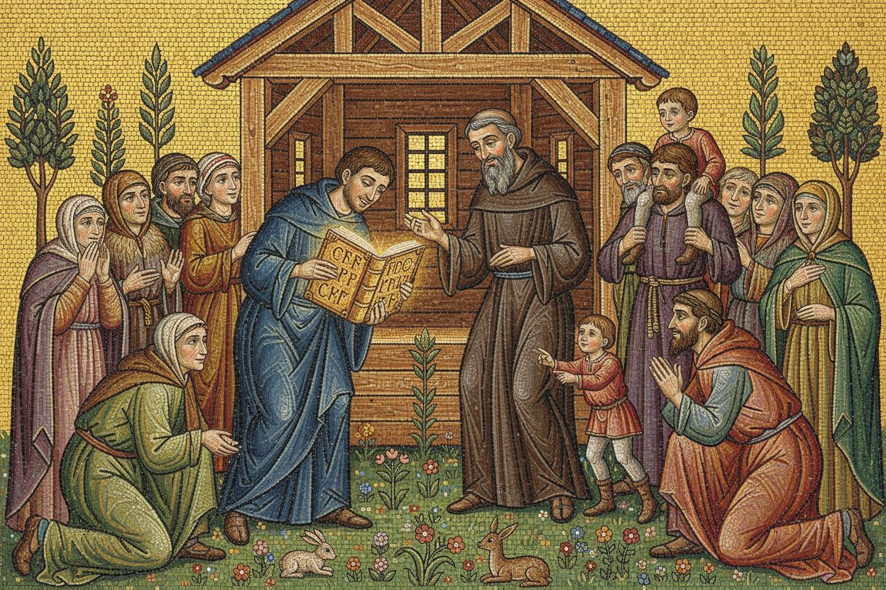
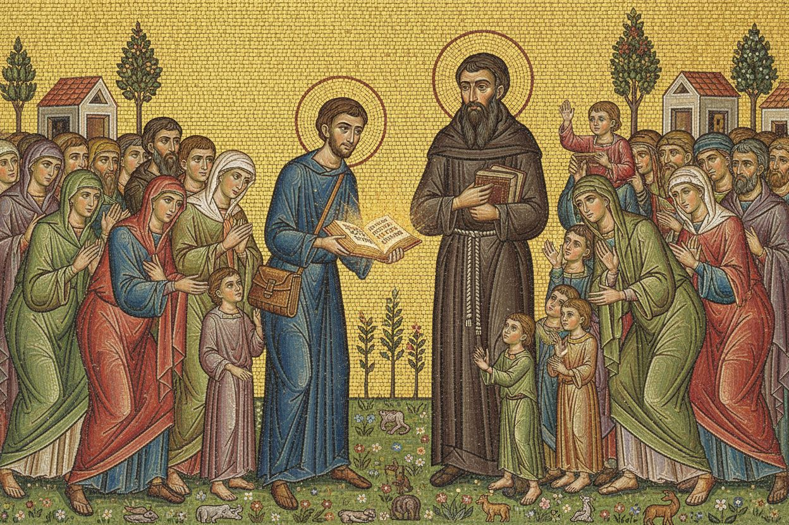
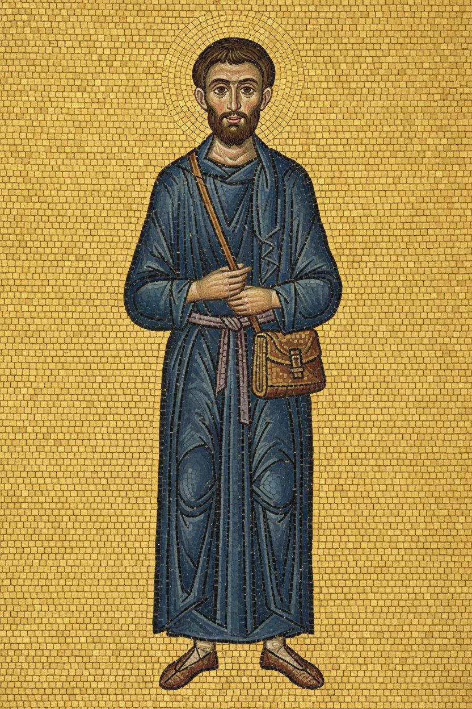
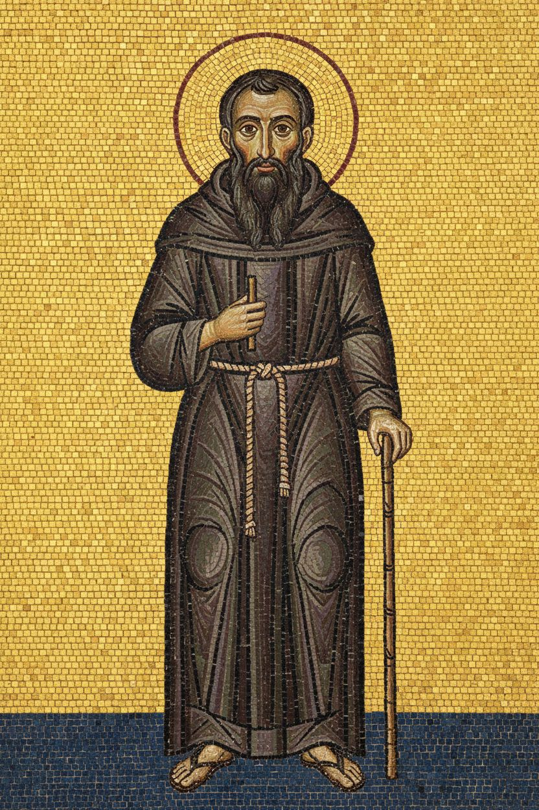

1. Words people understand
nenamalováno


2. Only three languages?
nenamalováno


Postavy v novém stylu




Styl
style: >- Roman Gothic wall mosaic in the manner of Jacopo Torriti's apse mosaics in Santa Maria Maggiore, Rome (1290s), adapted as a bright, lively illustration for a children's book that keeps the dignity and real faces of the original mosaic. Fine, small glass tesserae laid in smooth flowing rows, radiant warm gold ground that glitters, rich jewel colours: deep lapis blue, vermilion and rose red, emerald and sage green, cream white, touches of violet. Figures tall and graceful with natural adult proportions (heads small, about one seventh of the body), not cartoon or chibi: faces drawn as in the mosaic, long straight noses, almond eyes, defined brows and beards, modelled in graded bands of tesserae with warm flesh tones; expressions warm and glad but shown in the mosaic's own language, through lifted eyes, soft smiles and open gestures rather than cartoon grins; drapery flowing in soft curving folds with light catching the edges. A green meadow ground full of small flowers, little animals and birds, slender stylised trees and acanthus scrolls; buildings small and open like stage houses. Bright and festive, gold light everywhere, a celebration. The story is told with life and warmth: the people are glad and surprised, with open happy faces, smiles and laughter, eyes shining; they lean in, turn to each other, reach out, children press forward on tiptoe, someone lifts a child to see, hands are raised in delight. What the brothers bring, the books and the letters, is shown as a great treasure: it glows with warm golden light that falls on the faces around it. The two brothers smile broadly, bend down to the children, hold the open book out for everyone to see, their whole bodies turn towards the people. Groups are loose and in motion, gathered around the gift. palette: - '#D9AE45' - '#F0D27A' - '#1F4E9C' - '#C8402F' - '#D97A8A' - '#3F8A5A' - '#9DBB7A' - '#F4ECD8' - '#6A4C8C' - '#E4B49A' mood: >- joyful, radiant, festive, golden, wonder-struck, alive, grateful, a treasure received negative: >- No text, no letters, no words, no inscriptions, no watermark. No cartoon or comic look, no big round heads, no button eyes, no exaggerated grins, no chibi proportions. No river or water strip, no swimming figures. No stiff frontal rows of identical figures, no two figures standing side by side facing the viewer, no solemn blank stares. Not a 3D render, not glossy plastic, no photographic church interior, no windows or architecture around the mosaic: the mosaic fills the whole image. aspect_ratio: '3:2'